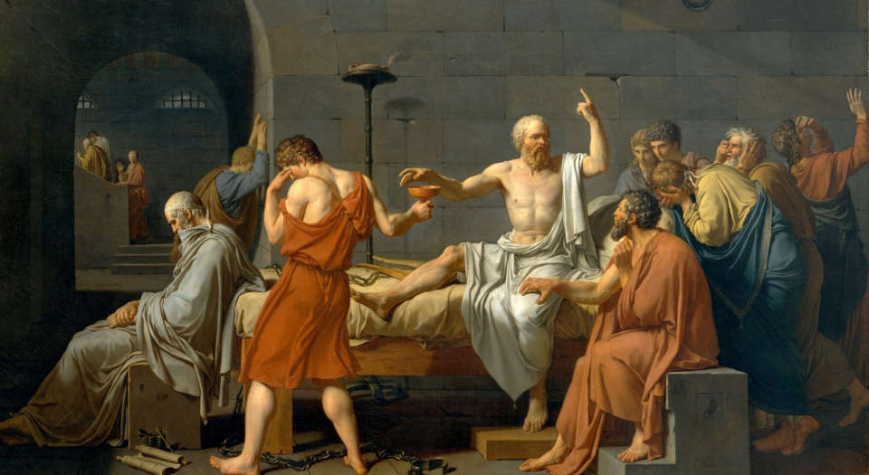
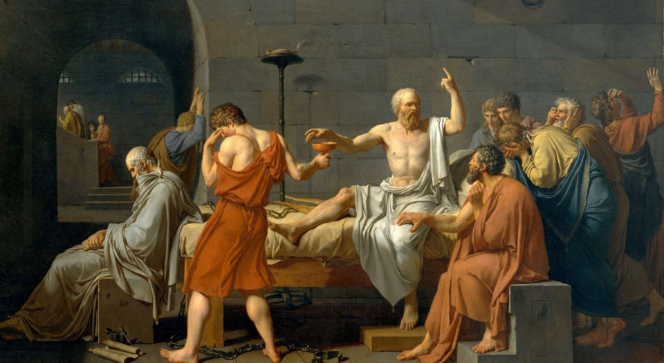

Why Autonomy Matters
Your data is valuable. Every click, search, and purchase is tracked and sold. Digital autonomy is about reclaiming control over your online presence and protecting your personal information.
Taking control of your digital presence and data.
Your data is valuable. Every click, search, and purchase is tracked and sold. Digital autonomy is about reclaiming control over your online presence and protecting your personal information.
